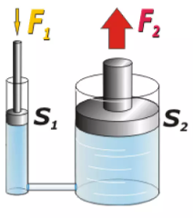

Principio de Pascal
Es una ley enuniada por el físico y matemático francés Blaise pascal (1623-1662) que se resume en la frase: la presión ejercidad por un fluido incomprensible y en equilibrio dentro de un recipiente de paredes indefromables, se transmite con igual intensidad en todas las direcciones y en todos los puntos del fluido.
El principo de Pascal puede comprobarse utilizando una esfera hueca, perforada en diferentes lugares y provistas de un embolo. Al llenar la esfera con agua y ejercer presión sobre ella mediante el émbolo, se observa que el agua sale por todos los agujeros con la misma velocidad y por lo tanto con la misma presión.
También podemos ver aplicaciones del principio de Pascal en las prensas hidraulicas, en los elevadores hidráulicos y en los frenos hidraulicos.
El principio de Pascal puede ser interpretado como una consecuencia de la ecuación fundamental de la hidrostática y de carácter altamente incomprensible de los liquidos. En esta clase de fluidos la densidad es practicamente constante, de modo que de acuerdo en con la ecuación: P = Po + Pgh
Donde:
P: Presión total a la profundidad.
Po: Presión sobre la superficie libre del fluido.
p: Densidad del fluido.
g: aceleración de la gravedad.
h: Altura medidad en Metros.
La presión se define como la fuerza ejercidad sobre unidad de área p = F/A. De este modo obtenemos la ecuación: F1/A1 = F2/A2, entendiéndose a F1 como la fuerza en el primer pistón y A1 como el área de este último. Realizando despejes sobre esta ecuación básica podemos obtener los resultados deseados en la resolución de un problema de fisica de este orden.
Si se aumenta la presión sobre la superficie libre, por ejemplo, la presión total en el fondo ha de aumentar en la misma medida, ya que el termino pgh no varia al no hacerlo la presión total. Si el fluido no fuera incomprensible, su densidad responderia a los cambios de presión y el principio de Pascal no podria cumplirse. Por otra parte, si las paredes del recipiente no fuesen indeformables, las variables en la presión en el seno del liquido no podría transmitirse siguiendo este principio.
Ejemplo:
La presión ejercidad sobre la superficie de un liquido contenido en un recipiente cerrado se transmite a todos los puntos del mismo con la misma intensidad.
El principio de Pascal se aplica en la hidrostática para reducir las fuerzas que deben aplicarse en determinados casos. Un ejemplo del Principio de Pascal puede verse en el punte hidráulico.